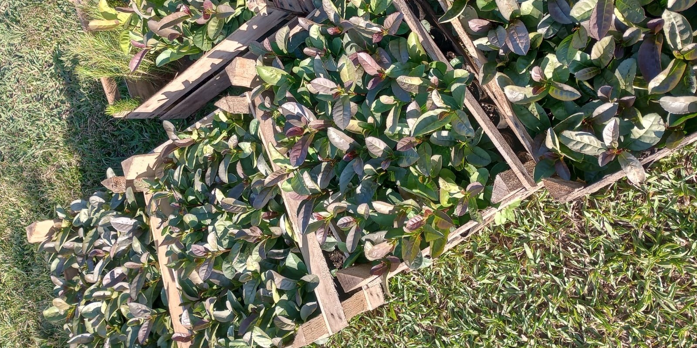
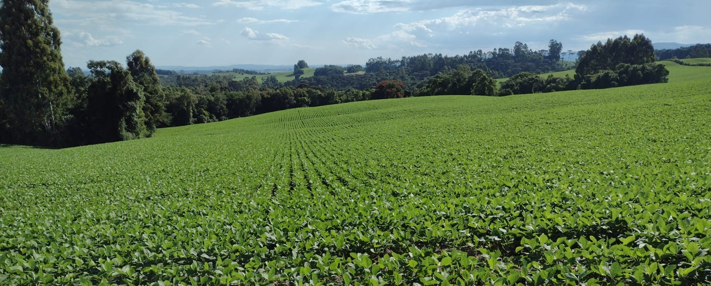

O cuidade com o meio ambiente depende de cooperações entre produtores rurais, empresas e institutos de pesquisas.

Fonte: arquivo pessoal.
Sustentabilidade
Tem se tornado uma das áreas mais importantes, por se relacionar com o nosso futuro e com o planeta. Vem para reduzir e amenizar impactos ambientais na agricultura.
Exemplos desse cenário na agricultura:
- Reflorestamentos;
- Manejos integrados;
- Energia renovável;
- Uso de tecnologias de precisão;
- Adubos orgânicos;
- Controle biológico de pragas;

Fonte: arquivo pessoal.
E quais os resultados?
As práticas sustentáveis trazem diversos benefícos, como:
- Redução do uso de insumos químicos;
- Redução de custos;
- Alimentos mais saudáveis;
- Aumento da diversidade biológica;
- Melhora da qualidade do solo.